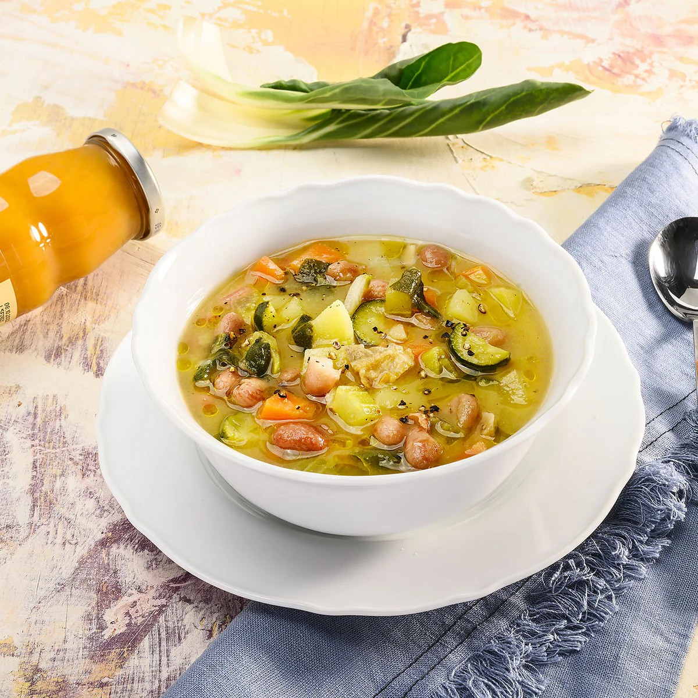

Che cosa sono i fagioli?
I fagioli sono semi commestibili appartenenti alla famiglia delle leguminose, molto diffusi in tutto il mondo e particolarmente apprezzati per il loro valore nutrizionale e la versatilità in cucina. Sono una fonte eccellente di proteine vegetali, fibre, vitamine del gruppo B e minerali come ferro, potassio e magnesio.
Nel silenzio della terra, maturano lentamente sotto il sole, piccoli scrigni di energia e vita. I fagioli si presentano in molte varietà — cannellini, borlotti, rossi, neri e tanti altri — ognuno con sfumature diverse, forme armoniose e sapori che raccontano storie antiche, di campi coltivati con pazienza e tavole condivise con amore. Semplici e umili, ma profondamente generosi, sono il cuore caldo di zuppe, insalate e piatti che sanno di casa.
Valori nutrizionali dei fagioli (per 100g cotti)
Questi valori rendono i fagioli un alimento nutriente, ideale soprattutto in diete vegetariane o vegane, per il loro contenuto proteico e la capacità di saziare a lungo.

ZUPPA DI FAGIOLI E VERDURE
Ingredienti
- 250g di fagioli cotti
- 2 carote
- 1 costa di sedano
- 1 cipolla
- 2 pomodori maturi
- Olio extravergine d’oliva
- Rosmarino, sale e pepe
Preparazione
Soffriggi cipolla, carota e sedano tritati finemente. Aggiungi i pomodori a pezzetti e i fagioli cotti. Copri con acqua, unisci il rosmarino e lascia cuocere per circa 20 minuti a fuoco medio. Regola di sale e pepe e servi caldo con un filo d’olio a crudo.

BURGER DI FAGIOLI VEGETARIANI
Ingredienti
- 300g di fagioli lessati
- 60g di pangrattato
- 1 spicchio d’aglio
- Mezza cipolla
- Prezzemolo fresco
- Paprika, pepe nero
- Olio extravergine d’oliva
Preparazione
Frulla i fagioli con la cipolla, l’aglio e il prezzemolo. Aggiungi paprika e pepe. Incorpora il pangrattato fino a ottenere un composto compatto. Forma i burger con le mani e cuocili in padella con un filo d’olio finché dorati su entrambi i lati.